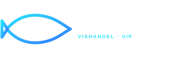

13–15 september 2026
Volledig programma, jouw favorieten en wat er nu speelt.

Even opladen tussen de optredens? Haal iets lekkers bij Vishandel Bomers – alle dagen aanwezig.
Lichtenvoorde centrum
Op iPhone kun je Apple Maps of Google Maps openen.